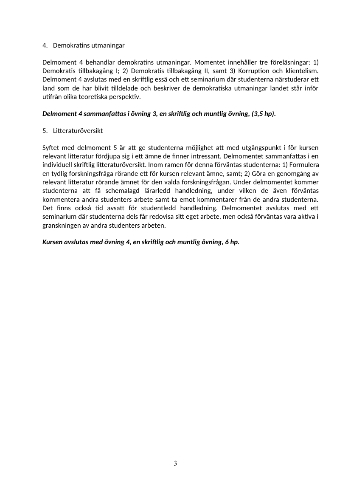
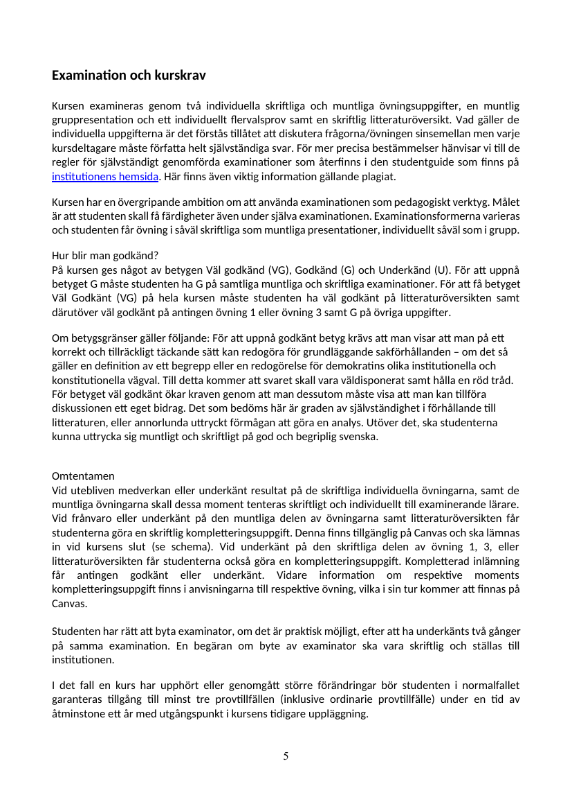

Belägg för examinationsmatrisens markeringar · Källa: kursguide V26
Tabellen nedan styrker examinationsmatrisens markeringar för SK1214 mot kursguide V26.
| Examinationsform (per matris) | Citat ur kursguide V26 | Källa |
|---|---|---|
| Flervalsprov | Delmoment 3 sammanfattas i övning 2, en muntlig övning (gruppresentation) och en skriftlig övning (individuellt flervalsprov) (2 hp). | Sid 3 — Se sida → |
| Litteratur-/forskningsöversikt | Syftet med delmoment 5 är att ge studenterna möjlighet att med utgångspunkt i för kursen relevant litteratur fördjupa sig i ett ämne de finner intressant. Delmomentet sammanfattas i en individuell skriftlig litteraturöversikt. | Sid 3 — Se sida → |
| Seminarieinlämning / memo | Kursen examineras genom två individuella skriftliga och muntliga övningsuppgifter, en muntlig gruppresentation och ett individuellt flervalsprov samt en skriftlig litteraturöversikt. | Sid 5 — Se sida → |
| Muntlig presentation | Delmoment 3 sammanfattas i övning 2, en muntlig övning (gruppresentation) … Delmoment 1 och 2 sammanfattas i en skriftlig och muntlig övning. | Sid 3 — Se sida → |
| Seminariedeltagande | Delmoment 4 avslutas med en skriftlig essä och ett seminarium där studenterna närstuderar ett land … Delmoment 5 avslutas med ett seminarium där studenterna dels får redovisa sitt eget arbete, men också förväntas vara aktiva i granskningen av andra studenters arbeten. | Sid 3 — Se sida → |

Sida 3 — Delmoment 4 + 5 (litteraturöversikt + seminarium)
Sida 5 — Examination och kurskrav